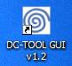
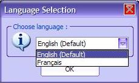
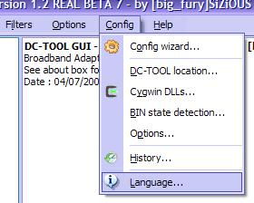
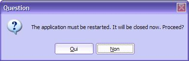
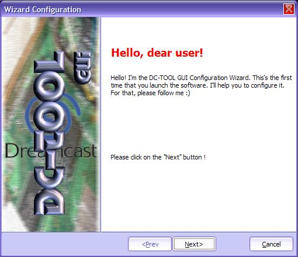
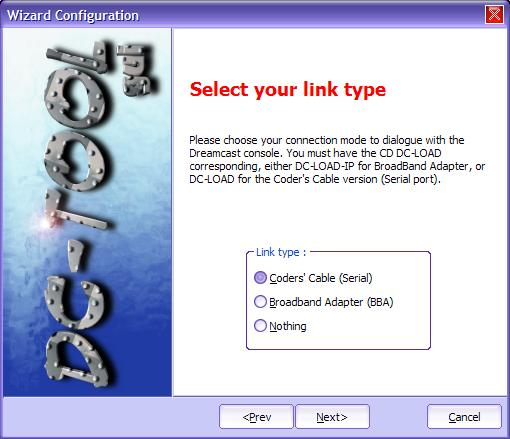
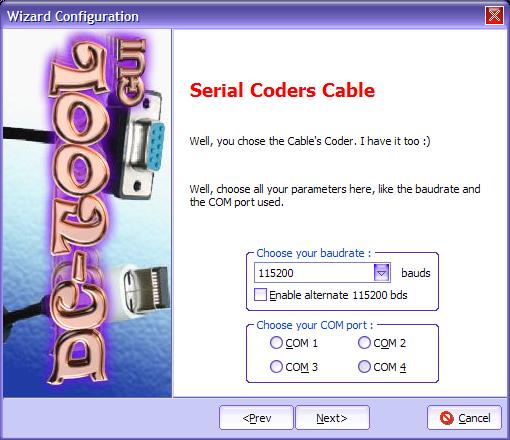
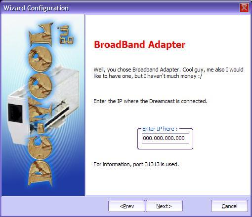
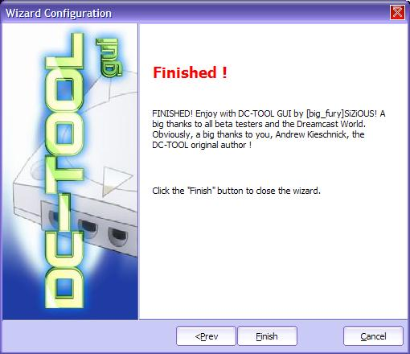

| 2. Premier lancement de DC-TOOL GUI |
Ce chapitre traite de la configuration du mode de connexion et de la langue.
Note : Pour obtenir le "configurateur magique" par la suite, vous pouvez vous rendre dans le menu Configuration > Assistant de configuration.
1) Configuration de la langue
a) Définition de la langue
Lancez DC-TOOL GUI en double cliquant sur son icône.

Après l'écran de démarrage, vous avez une boîte de dialogue qui se lance.

Vous pouvez choisir la langue
voulue. Je vous recommande tout de même le Français ;)
Malgré tout, seulement les contrôles sont en français, pas
le contenu des debug logs (le principal quoi).
Sélectionnez votre langue dans la liste déroulante plus cliquez sur OK.
Si vous vous êtes trompé, vous pouvez toujours changer la langue. Pour cela Allez Config > puis Language.

Vous avez ensuite une demande en anglais :

Cliquez sur Oui pour redémarrer l'application et changer la langue. Vous avez de nouveau la possibilité de rechanger la langue autant de fois que vous voulez.
NB : Pour pouvoir changer la langue, avoir le programme lang.exe dans le dossier de DC-TOOL GUI. Normalement il est présent, sinon il est extrait de la DLL dctool.dll. Bref, ceci pour dire que si vous lancez lang.exe, vous aurez la possibilité de changer la langue également.
b) Traduction
Vous pouvez, si vous le voulez, traduire d'autres langues, si vous en connaissez d'autres. Pour cela, consulter le chapitre Ajouter une nouvelle langue à DC-TOOL GUI.
2) Configuration de la connexion
Maintenant une nouvelle boite de dialogue apparaît :

Il s'agit d'un "configurateur magique" (=assistant de configuration). Il permet de configurer votre programme très simplement. Cliquez sur Suivant (Next).

Choississez votre type de liaison. Vous avez deux types disponibles. Vous avez le Coders Cable (Câble série) et le Broadband Adapter / LAN Adapter (Haut débit). Aucune (Nothing) est... un truc sans interêt :)
Une fois que vous avez choisi votre type de connexion, cliquez sur Suivant. Vous n'êtes pas obligé de l'avoir relié maintenant.

Ici, vous avez choisi le Coders Cable. Vous pouvez choisir ici le port COM ou il est branché, et la vitesse exprimée en bauds (par défaut 57600). Vous pouvez généralement la mettre à 115200. Vous pouvez aussi essayer le mode alterné pour un débit de 115200 bds en cliquant sur Activer 115200 bds alterné.

Ici vous avez choisi le Broadband adapter. Vous devez simplement rentrer l'IP de communication. Par défaut, elle est de 000.000.000.000.

Bravo ! Vous avez terminé de configurer votre connexion. Cliquez sur Terminer (Finish).
3) Autres options de liaison
D'autres options de liaision sont disponibles. Consultez le chapitre Présentation des Menus pour plus de détails.